Overview專案概述
Funhub is Malaysia’s first Entertainment & Lifestyle Social Circle App, offering users a variety of vouchers and deals for entertainment, food, travel, and other services. As the platform expanded, so did its selection of available vouchers.
Funhub 是馬來西亞第一個「娛樂與生活社交圈」App，提供使用者娛樂、美食、旅遊等各類服務的票券與優惠。隨著平台規模擴大，可用的票券選擇也隨之增加。
As the number of merchants on Funhub grows, the current deals page making it harder for users to discover relevant offers and for merchants to get visibility. This project redesigned the deals page to improve discoverability and organisation, and introduced a location-based nearby merchants section to boost merchant exposure.
然而，現有的優惠頁面設計難以有效應付這樣的成長，使用者在雜亂且資訊過載的介面中很難找到符合需求的優惠。這個專案的目標是重新設計優惠頁面、強化易用性與資訊架構，讓使用者在優惠數量持續增加的情況下，依然能找到想要的內容。
The Problem問題
Growth created two problems at once — one on the user side of the marketplace, one on the merchant side.
成長同時帶來了兩個問題——一個在這個市集的使用者端，一個在商家端。
Hard to Navigate and Discover難以瀏覽與發現相關優惠
Growing voucher volume made the deals page cluttered, making it harder for users to find relevant deals.
隨著 Funhub 平台上可用票券數量增加，使用者越來越難瀏覽並找到相關的優惠。現有的版面配置變得沒有效率且雜亂，導致使用者體驗不佳、感到挫折。
Lesser-Known Merchants Stayed Invisible小眾商家的曝光度與使用者信任度不足
Low visibility left smaller merchants overlooked, creating a sales gap compared to bigger vendors.
較不知名的商家因為在平台上曝光度低，加上使用者信任度不足，導致票券銷售困難，使知名品牌與小眾商家之間的銷售表現出現明顯落差。
The two were linked. A cluttered page is hardest on the merchants nobody is already searching for — so fixing discovery was also how we could fix visibility.
這兩件事其實是同一件事的兩面。版面越雜亂，對那些本來就沒人主動搜尋的商家越不利——所以改善「探索體驗」，同時也就是改善「曝光度」的方法。
Goal目標
Improve Navigation and Deal Discovery改善瀏覽與優惠探索體驗
Revamp the layout to provide a more efficient, user-friendly experience, making it easier for users to navigate through the platform and quickly discover relevant vouchers without frustration.
重新設計版面配置，提供更有效率、對使用者更友善的體驗，讓使用者能輕鬆瀏覽平台、快速找到相關票券，不再感到挫折。
Boost Voucher Purchases and Improve User Confidence提升票券購買率並強化使用者信任
Enhance the platform’s design to give lesser-known merchants more visibility, as well as to gain users’ trust, helping to level the playing field and boost their voucher sales by making their offers easier to find.
優化平台設計，提升小眾商家的曝光度，同時贏得使用者的信任，幫助拉近與知名品牌之間的差距，讓他們的優惠更容易被找到，進而提升票券銷售。
Discover and Define探索與定義
Feedback Received收到的回饋
We’ve been receiving feedback from both merchants and users regarding the deals page. Both groups have different concerns. Based on feedback from both users and merchants, we identified 2 key findings:
我們陸續收到來自商家與使用者對優惠頁面的回饋，兩個群體關注的重點各不相同。根據雙方的回饋，我們歸納出 2 項關鍵發現:
Merchants: Low Voucher Sales商家反映票券銷售量偏低
Merchants experienced low visibility for their vouchers, particularly newer or less popular ones, resulting in reduced sales. This led to a notable gap between well-known brands and lesser-known merchants in terms of sales performance.
商家的票券曝光度不足，尤其是較新或較不熱門的票券，導致銷售量下滑，使知名品牌與小眾商家之間的銷售表現出現明顯落差。
Users: Poor Usability使用者反映票券頁面的易用性不佳
Users struggled to find specific deals due to a cluttered layout and inadequate search options. Many found scrolling through irrelevant offers time-consuming and frustrating.
由於版面雜亂、搜尋功能不足，使用者難以找到特定優惠，許多人覺得滑過一堆不相關的優惠既費時又令人挫折。

What We Want to Achieve我們想達成的目標
From the feedback we received from both users and merchants, we brainstormed and identified a few items we want to achieve:
根據使用者與商家的回饋，我們透過腦力激盪，歸納出幾項想要達成的目標:
Increase Confidence in Merchants提升使用者對商家的信任
Especially for lesser-known or non-famous branded merchants. This will help level the playing field and increase visibility for all vendors on the platform.
尤其是較不知名或非知名品牌的商家。這有助於拉近差距，提升平台上所有商家的曝光度。
Improve the Deals Page Experience改善優惠頁面的整體使用體驗
Make it easier for users to navigate, find relevant deals, and reduce frustration caused by information overload.
讓使用者更容易瀏覽、找到相關優惠，並減少資訊過載帶來的挫折感。
Increase Voucher Purchase Rate提升票券購買率
Boost overall purchases through better experience and merchant visibility, and improve the deals detail page so users can access key information for informed decisions.
我們希望透過優化使用者體驗與提升商家曝光度，帶動整體票券購買量。我們也會改善優惠詳情頁面，確保使用者能輕鬆取得關鍵資訊，做出明智的購買決策。
How Might We我們可以如何
Increase user confidence in lesser-known merchants, improve the overall usability of the deals page, and ensure users can easily access key information, in order to boost voucher purchase rates and enhance visibility for all vendors on the platform?
提升使用者對小眾商家的信任、改善優惠頁面的整體易用性，並確保使用者能輕鬆取得關鍵資訊，藉此提升票券購買率，同時強化平台上所有商家的曝光度?
Solution Exploration解決方案探索
UI/UX AuditUI/UX 稽核
We analysed the current UI as well as the whole user experience of the page, identifying strengths to retain and weaknesses to address.
我們分析了現有介面以及整體使用者體驗，找出值得保留的優點與需要改善的缺點。
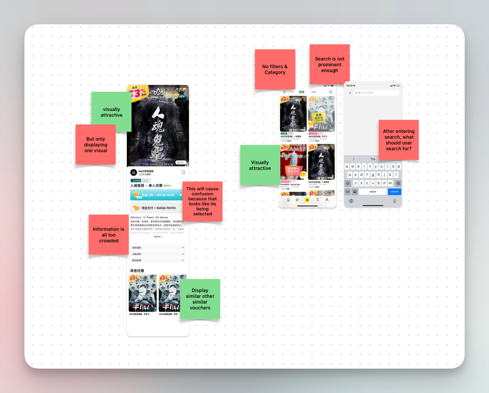
Competitive Analysis競品分析
I conducted a competitive analysis to understand how other deal platforms organise and present their vouchers, gaining insights into industry best practices and potential areas for improvement.
我進行了競品分析，了解其他優惠平台如何組織與呈現票券，藉此汲取業界最佳實務，並找出可能的改善空間。
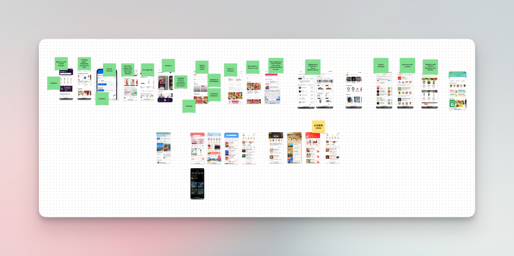
User Flow使用者流程
I created user flows to map out the journey from when a user lands on the deals page to when they purchase a voucher. This helped me visualise the entire process and identify potential pain points or areas for improvement in the user experience.
我繪製了使用者流程，呈現使用者從進入優惠頁面到購買票券的完整旅程。這幫助我將整個流程視覺化，並找出使用者體驗中潛在的痛點與可改善之處。
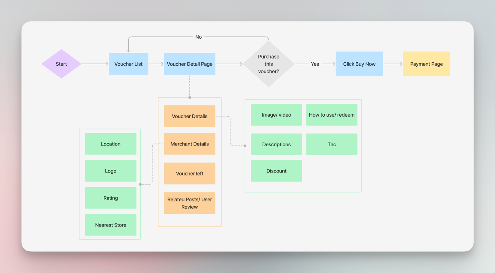
Initial Concept Exploration初步概念探索
During the brainstorming stage, I developed two key ideas:
在腦力激盪階段，我發展出兩個主要構想:
-
Voucher-Focused Exploration以票券為核心的探索
Primarily aimed at selling vouchers, this approach also allowed users to explore vouchers by merchant, either by directly browsing vouchers or discovering merchants first and checking their offers.
此做法主要以銷售票券為目標，同時也讓使用者能依商家瀏覽票券，無論是直接瀏覽票券，或先發掘商家再查看其優惠皆可。
-
Exploration Guide探索指南
Starting from a play guide, users could explore nearby spots for dining, entertainment, and leisure, while simultaneously being presented with relevant vouchers. This concept included detailed merchant information and services.
從一份玩樂指南出發，使用者可以探索附近的餐飲、娛樂與休閒地點，同時看到相關的票券。此構想也包含詳細的商家資訊與服務內容。
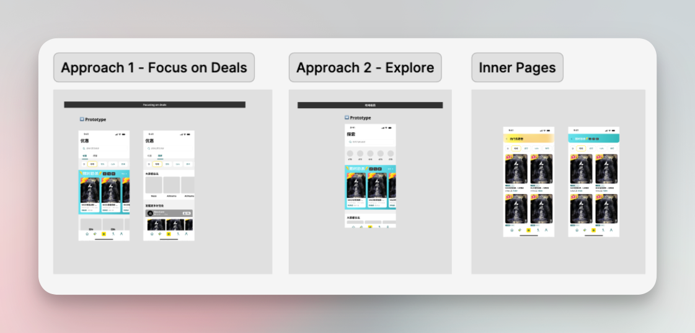
The team was excited about these ideas, especially the exploration guide, and we decided to proceed with that direction.
一開始，團隊對這些構想都很興奮，尤其是探索指南，並決定採用這個方向。
Then the Brief Changed然後，需求變了
With the mockups almost done, a change in requirements from management meant starting over. Development time was limited, so we prioritised a simpler solution that still met the same goals and was easier for developers to implement — and put the original concepts on hold.
就在視覺稿階段快完成時，管理層的需求變更，我被告知需要重做。考量到開發時間有限，我們決定優先採用一個更簡單、符合目標且開發團隊也更容易實作的方案，原本的構想則暫時擱置。
Wireframe Stage, Again再次進入線框稿階段
Following our decision for a simpler solution, the wireframes prioritised an intuitive filtering system to help users find relevant deals. We also highlighted nearby lesser-known merchants, increasing their visibility and encouraging users to explore new offers in their area. This approach aimed to enhance user experience while supporting non-famous brands.
在決定採用更簡單的方案後，線框稿以直覺化的篩選系統為優先，幫助使用者找到相關優惠。我們也特別凸顯附近的小眾商家，提升他們的曝光度，鼓勵使用者探索所在地區的新優惠。這個做法旨在提升使用者體驗，同時支持非知名品牌。
Deals List Page優惠列表頁
The Question要解的問題
If there’s more than 10 merchants, what is the best way to display them?
如果商家超過 10 家，最好的呈現方式是什麼?
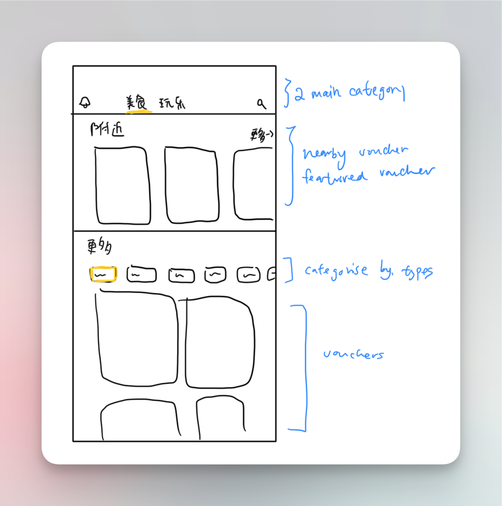
Voucher Page票券頁面
The Question要解的問題
What information is useful for users to make a decision about purchasing a voucher?
哪些資訊有助於使用者決定是否購買票券?
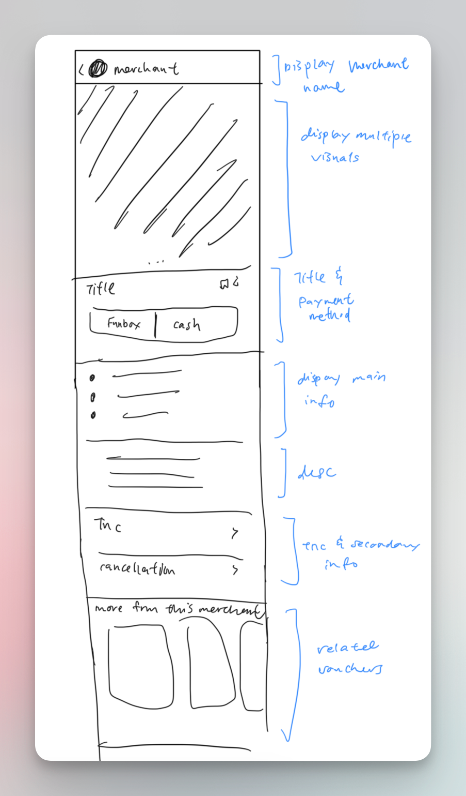
Iteration Process迭代過程
After the wireframe got approved, I started to work on the UI. I tried out a few options to discuss with the Design Lead during Design Review.
線框稿確認後，我開始著手設計介面，並嘗試了幾個版本，以便在設計審查時與設計主管討論。
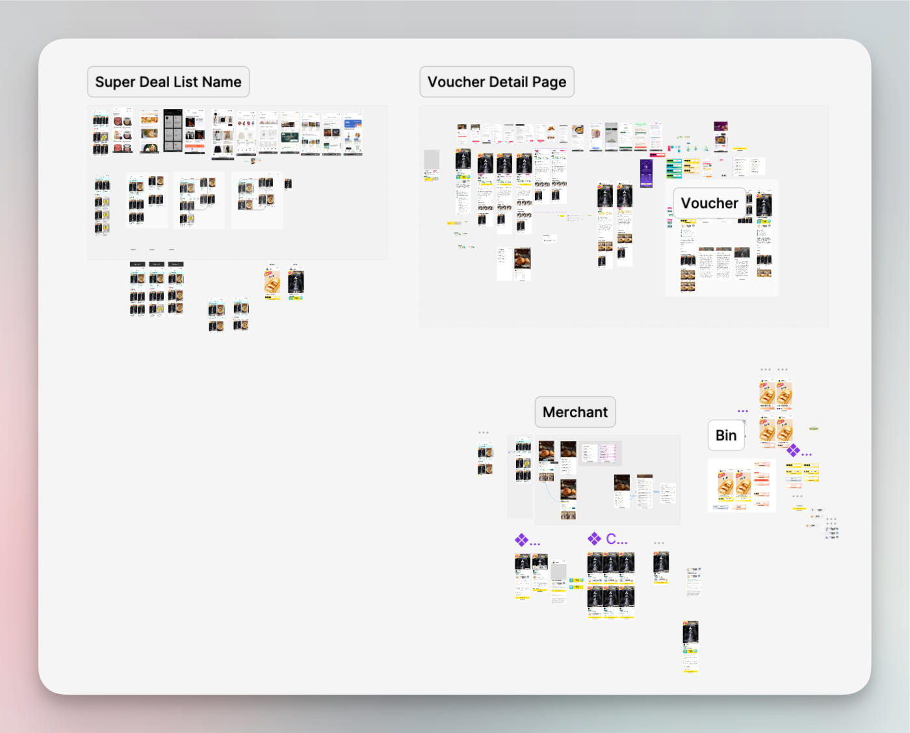
Deals List Page優惠列表頁
I designed several options for the card layout and encountered a few challenges during the design process:
我為卡片版面設計了幾種選項，並在設計過程中遇到一些挑戰:
- Balancing design for both Chinese and English text presented challenges, as the varying text lengths affected the layout.
- 同時兼顧中文與英文文字的設計是一大挑戰，因為兩種語言的文字長度不同，會影響版面配置。
- We had to ensure the design was flexible enough to accommodate both languages without compromising readability or aesthetics.
- 我們必須確保設計有足夠的彈性，能容納兩種語言，同時不犧牲可讀性與美觀。
While designing, we also tried to identify what would be useful to attract users to click into the voucher.
在設計過程中，我們也嘗試找出哪些元素有助於吸引使用者點擊查看票券。
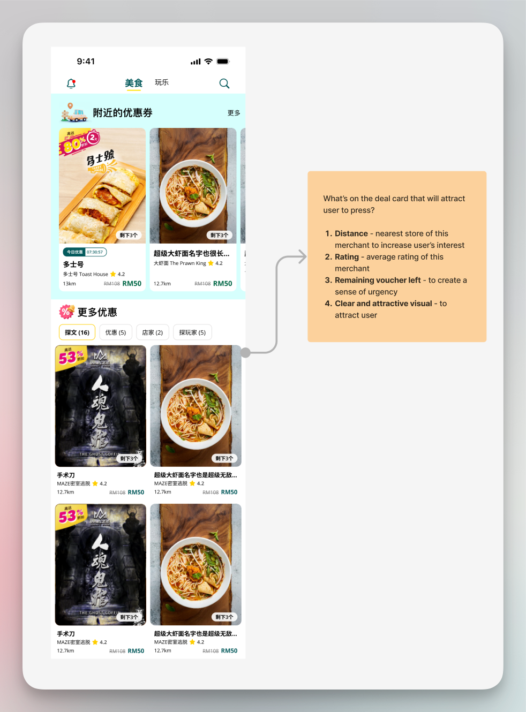
Feedback from the Design Lead and testing the UI internally helped refine the design, and after several iterations, we decided to go with option 3.
設計主管的回饋以及內部的介面測試，幫助我們持續優化設計，經過多次迭代後，我們決定採用第 3 個方案。
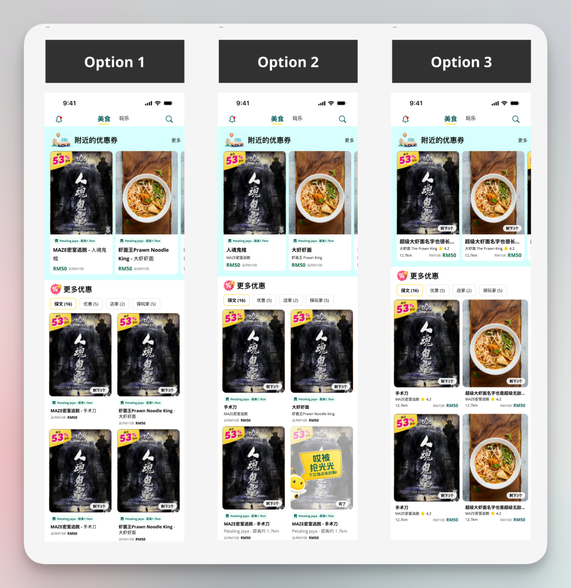
Voucher Page票券頁面
The first iteration featured a more eye-catching design with a timer, giving users a sense of urgency to purchase the ticket. However, due to time constraints in development, we decided to proceed with a simpler design. The initial, more dynamic iteration will be considered for future implementations when resources allow.
第一版設計較為吸睛，加入了倒數計時器，營造使用者立即購買的急迫感。不過由於開發時間有限，我們決定採用較簡單的設計。這個較具動態感的初版設計，將留待日後資源允許時再考慮實作。
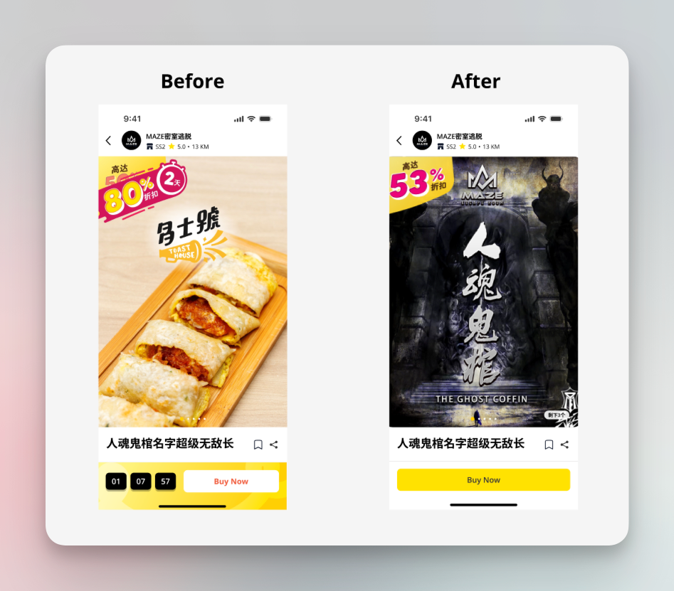
The layout placement is strategically designed, informed by insights from competitive analysis, to optimise user engagement and ease of navigation.
版面配置的安排經過策略性的設計，並參考競品分析的洞察，以提升使用者互動與瀏覽的便利性。
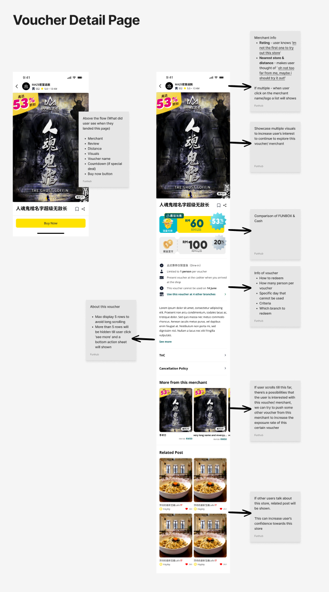
Final Design最終設計
After multiple iterations and refinements, the final design has been completed and is ready for handover to the development team.
經過多次迭代與優化，最終設計已經完成，準備交接給開發團隊。
Deals List Page優惠列表頁
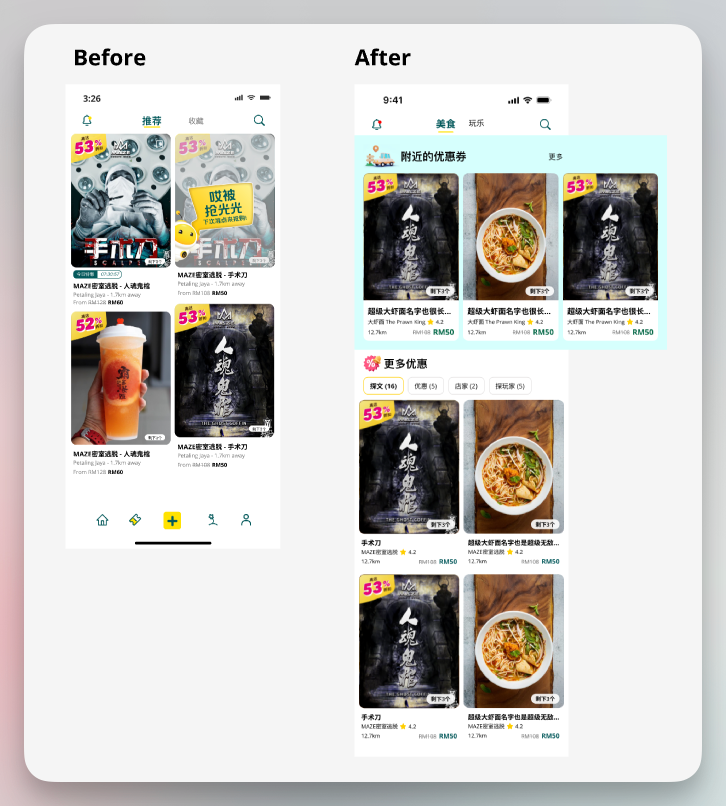

New Card Design全新卡片設計
- Redesigned with a card-based layout that allowed users to see more deals at once.
- 採用卡片式版面重新設計，讓使用者能一次看到更多優惠。
- Each card featured clear imagery, titles, rating, distance, price, and remaining vouchers.
- 每張卡片都清楚呈現圖片、標題、評分、距離、價格及剩餘票券數量。
Nearby Deals Section附近優惠區塊
A new “Nearby Deals” section was introduced to improve visibility for local and lesser-known merchants.
新增「附近優惠」區塊，提升在地與小眾商家的曝光度。
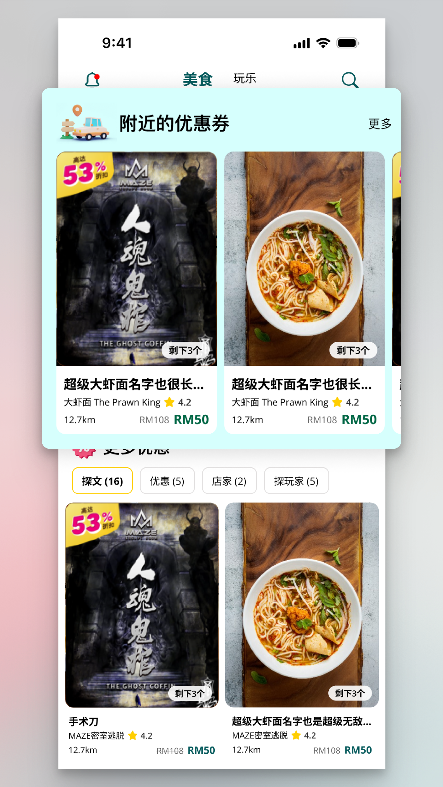
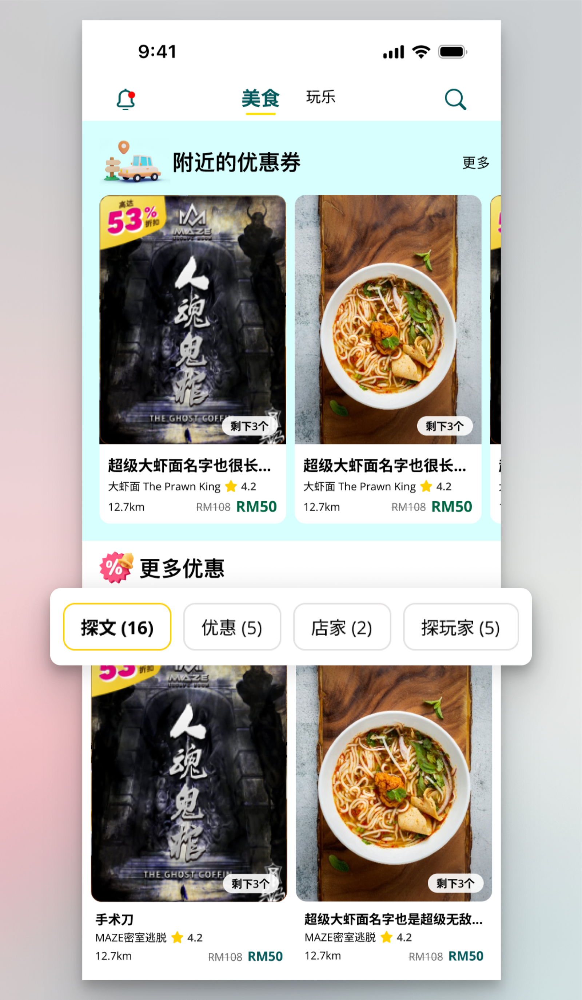
Category System分類系統
Users can filter vouchers using category tabs at the top of the page, making it easier to find specific types of deals.
使用者可透過頁面頂端的分類標籤篩選票券，更輕鬆找到特定類型的優惠。
Voucher Page票券頁面
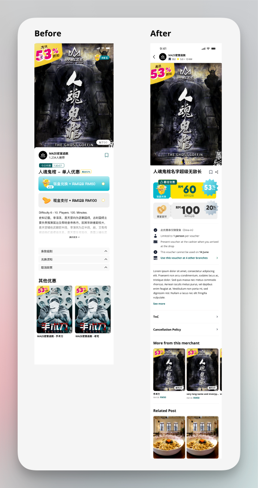
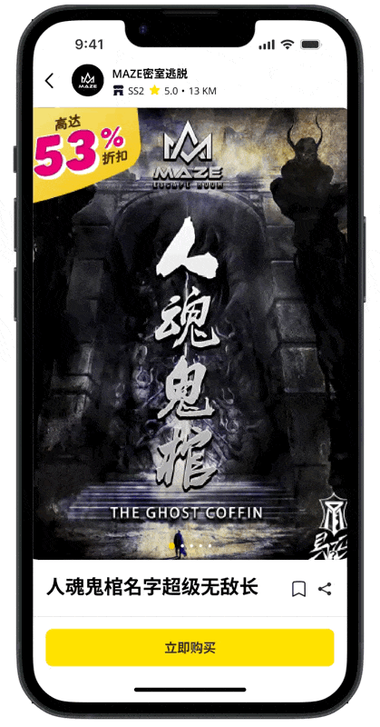
Key Features主要功能
- Position merchant information at the top to enhance visibility
- 將商家資訊置於頂部，提升曝光度
- Add information summary section to provide key decision-making details
- 新增資訊摘要區塊，提供關鍵決策資訊
- Include clear pricing information, terms and conditions, and usage instructions
- 清楚列出價格資訊、條款細則與使用說明
- Display user ratings and reviews prominently to build trust
- 顯著呈現使用者評分與評論，建立信任感
- Highlight any time-sensitive information (e.g., expiration dates, limited availability)
- 凸顯具時效性的資訊(例如到期日、數量有限)
Developer Handover開發交接
What I will usually provide during dev handover:
我在開發交接時通常會提供:
- Annotations: Detailed explanations of design decisions and functionality.
- 標註說明:詳細解說設計決策與功能邏輯。
- Components: Provided all reusable components to ensure design consistency.
- 元件庫:提供所有可重複使用的元件，確保設計一致性。
- Visual flow: A comprehensive flowchart to guide developers through user interactions and navigation.
- 視覺流程圖:完整的流程圖，協助開發團隊理解使用者互動與導覽邏輯。
In this case, I’ve also included English and Chinese versions since it’s a dual-language app.
由於這是一款雙語 App，這次我也一併提供了英文與中文版本。

Next Step後續步驟
We will continue to monitor user interactions with the new design and assess whether voucher sales have improved. This ongoing observation will help us further refine the user experience and measure the redesign’s impact on success metrics.
我們會持續觀察使用者與新設計的互動，評估票券銷售是否有所提升。這項持續的觀察將幫助我們進一步優化使用者體驗，並衡量改版對成功指標的影響。
To measure the effectiveness of the Funhub app’s deals and voucher page revamp, we identified several key success metrics to be measured:
為了衡量 Funhub App 優惠與票券頁面改版的成效，我們訂定了幾項關鍵成功指標:
User Engagement使用者互動度
By analysing the time spent on the deals page, interactions with filters, and the number of users browsing vouchers and merchants, we can evaluate whether the redesign encourages deeper engagement.
透過分析使用者在優惠頁面停留的時間、篩選器的使用情形，以及瀏覽票券與商家的人數，我們可以評估改版是否帶來更深入的互動。
Conversion Rate轉換率
Measuring the percentage of users who purchase vouchers after viewing the deals page helps assess the effectiveness of the new layout and features in driving sales.
衡量瀏覽優惠頁面後實際購買票券的使用者比例，有助於評估新版面與功能對銷售的帶動效果。
Voucher Redemption Rate票券兌換率
Tracking the percentage of vouchers purchased and redeemed post-revamp helps gauge user engagement. A higher redemption rate signifies increased interaction with the new deals page.
追蹤改版後票券的購買與兌換比例，有助於衡量使用者的參與程度。兌換率越高，代表使用者與新版優惠頁面的互動越活躍。
What I Learned我學到的
- Early User Involvement for Better Insights
Effective user research and testing are key to identifying pain points early. In future projects, I’d involve users even earlier in the design phase. - 及早讓使用者參與，獲得更好的洞察
有效的使用者研究與測試，是及早找出痛點的關鍵。在未來的專案中，我會讓使用者更早參與設計階段。 - Balancing Simplicity and Functionality in Design
Simplifying design without compromising functionality was a challenge, but it taught me the importance of balancing user needs with business goals. - 在簡潔與功能性之間取得平衡
在不犧牲功能性的前提下簡化設計是一大挑戰，但這讓我學到，平衡使用者需求與商業目標有多麼重要。 - A Brief Can Change Late — Design So It Survives
Losing a near-finished direction to a requirements change was the hardest part of this project. Keeping the goals fixed while the solution changed is what let us rebuild quickly instead of starting from nothing. - 需求可能在最後關頭改變，設計要能承受
在方向幾乎完成時因需求變更而重來，是這個專案最難的部分。把目標固定住、只讓解法改變，才讓我們能快速重建，而不是從零開始。